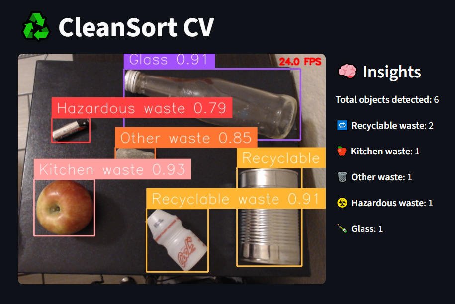
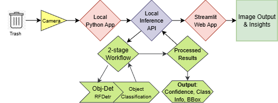
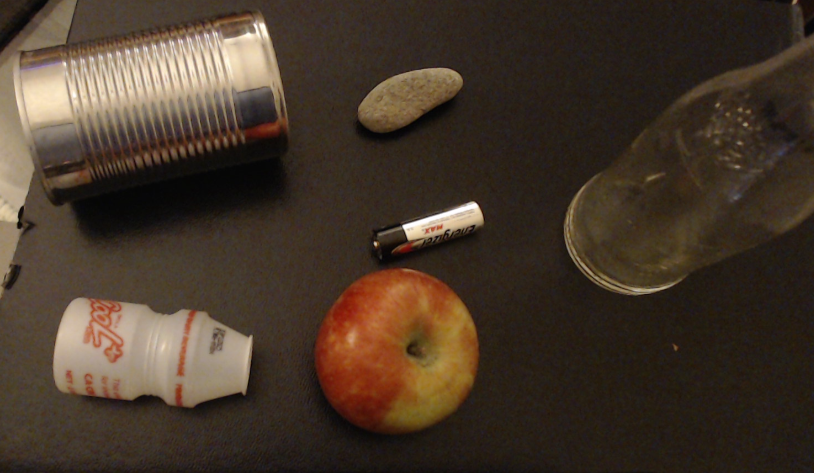

Why this page is simulated
The original depended on its trained workflow, local camera, and edge inference environment. Replaying the control logic is more honest than substituting an unrelated browser classifier.
Project 03
An edge vision application that classifies waste from a live camera, tracks category counts, and turns detections into simple operational alerts.
Interactive walkthrough
This browser version replays the application logic without claiming to run the original trained workflow or edge model.

OpenCV reads the camera stream while a separate inference pipeline processes frames. The UI keeps displaying the newest available result instead of blocking on every frame.

The workflow maps detections to recyclable, kitchen, other, hazardous, and glass waste. The callback receives annotated frames and class names.
Select an example category, then process it. This recreates the state changes from the original Python callback, not model inference.

Counts update twice per second. When a configured bin reaches capacity, the application surfaces an alert long enough for an operator to act.
Bin full. Empty now.
System design
The original depended on its trained workflow, local camera, and edge inference environment. Replaying the control logic is more honest than substituting an unrelated browser classifier.
I built CleanSort as part of my Roboflow interview process. The project demonstrated that I could connect computer vision to a usable field workflow, and it helped secure the role.
A recorded waste stream with saved predictions would provide a deterministic demo while preserving the behavior of the original model.
Read the source ↗